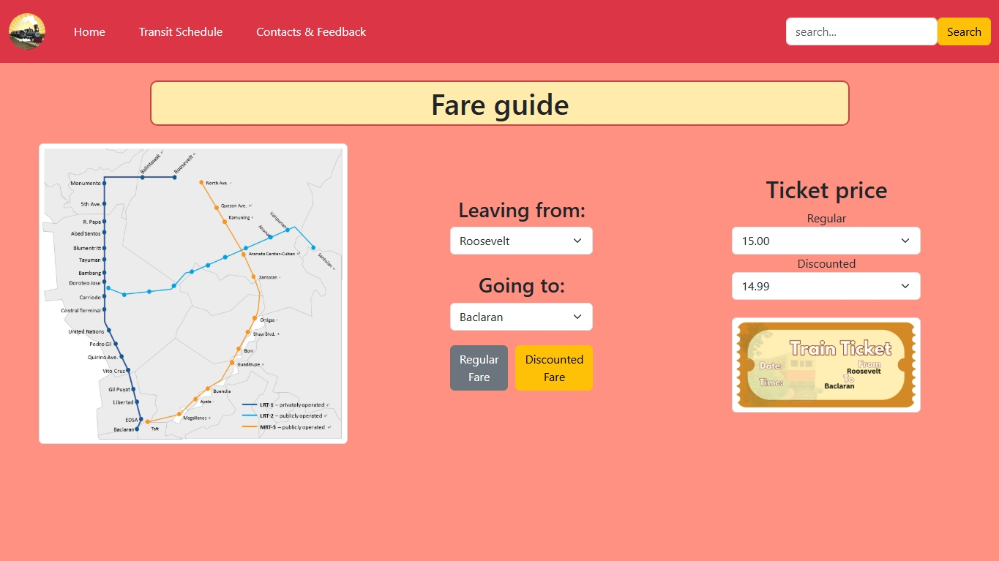

View Jerthielucagun's projects!

Quarter 1 Project
For Project 1, we were tasked to make an online shop using HTML elements, External CSS, and attributes we learned during First quarter.
View

Quarter 2 Project
For Project 2, we were tasked to make a Recipe Sharing website with the use of CSS and Bootstrap, including the basic HTML elements.
View

View
Quarter 3 Project
For our Project 3, we were tasked to collaborate with groupmates and make a Train Fare Guide with the use of HTML, CSS, Bootstrap, and JavaScript.
View